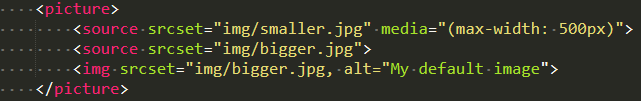
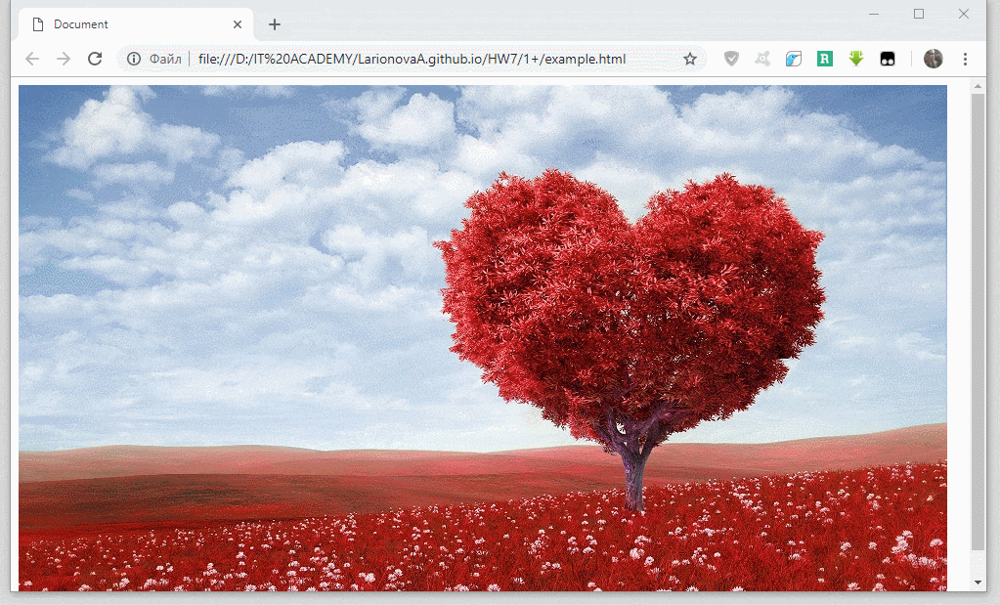
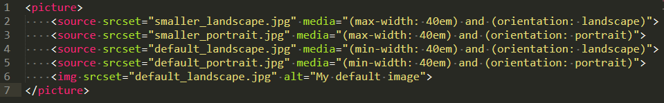
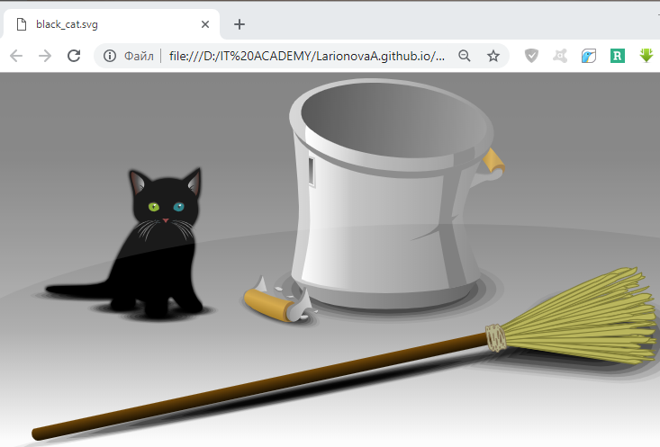
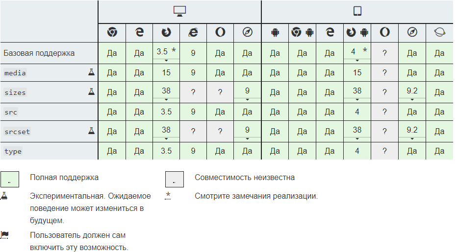

Значение тега <picture>
HTML-элемент <picture> служит контейнером для одного или более элементов <source> и одного элемента <img> для обеспечения оптимальной версии изображения для различных размеров экрана. Браузер рассмотрит каждый из дочерних элементов <source> и выберет один, соответствующий лучшему совпадению; если совпадений среди элементов <source> найдено не будет, то будет выбран файл, указанный атрибутом src элемента <img> . Затем выбранное изображение отображается в пространстве, занятом элементом <img>.
Чтобы выбрать оптимальное изображение, user agent анализирует атрибуты srcset, media, и type элемента <source> и выбирает совместимое изображение, которое наилучшим образом соответствует текущему макету страницы, характеристикам устройства отображения и т. д.
Этот элемент часто используют для того, чтобы обеспечить HiDPI (Retina)-версию изображений для дисплеев с высоким разрешением, а также для добавления современных форматов изображений, не поддерживаемых старыми браузерами.
Для этого элемента доступны универсальные атрибуты.
- адреса изображения (URL);
- дескриптора ширины, представляющего собой целое положительное число, за которым следует
'w'. Значением по умолчанию, если оно отсутсвует, является бесконечность. - дескриптора плотности пикселей, представляющее собой положительное десятичное число, за которым следует
'x'. Значением по умолчнию, если оно остутствует, является1x.
Основные шаги при работе с <picture>:
- Создайте открывающий и закрывающий теги
<picture></picture>. - Внутри создайте
<source>элемент для каждого выражения, что хотите обработать. - Добавьте атрибут
media, содержащий выражения для таких вещей как высота и ширина области просмотра, ориентация и т.д. - Добавьте атрибут
srcsetс соответствующим именем файла изображения для загрузки. - Добавьте дополнительные имена файлов к атрибуту
srcset, если нужно поддерживать разную плотность пикселей, например для Retina дисплеев. - Добавьте резервный (fallback) элемент
<img>.
Вот простой пример, где для случая, когда ширина видимой области меньше 500px - загружается уменьшенное (smaller) изображение:


Можно заметить, что синтаксис, используемый в атрибуте media является таким же, как и при использовании в CSS media queries. Вы можете использовать те же самые проверки, т.е. проверять max-width, min-width, max-height, min-height, orientation и т.д.
Эти проверки можно использовать для того, чтобы например загружать альбомную (landscape) или книжную (portrait) версию изображения в зависимости от ориентации устройства, к тому же можно одновременно проверять размеры в этих выражениях. Например:

Этот код загружает уменьшенную альбомную (landscape) версию изображения для устройств с малым экраном и соответствующей ориентацией. И увеличенную версию того же изображения для устройств с большим экраном.
Если устройство имеет книжную (portrait) ориентацию - загружается книжная версия изображения, уменьшенная для устройств с малым и увеличенная для устройств с большим экраном.
В следующем примере используется два изображения: одно в формате SVG, а второе в привычном PNG. Браузеры, которые поддерживают элемент </picture>, отобразят картинку в векторном виде. Браузер IE покажет изображение в формате PNG

Кроссбраузерность
